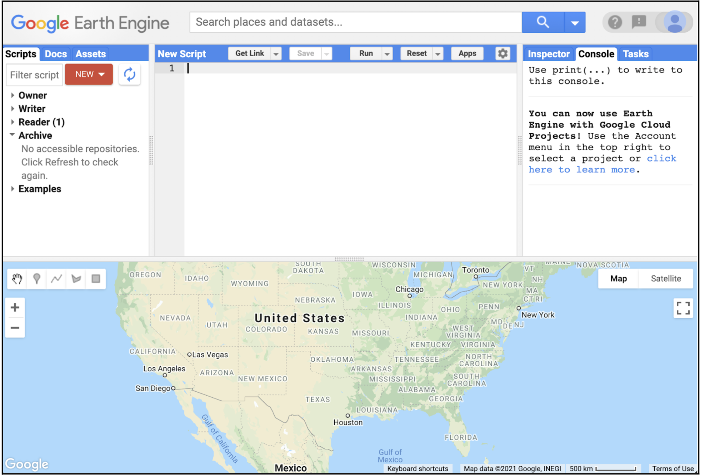
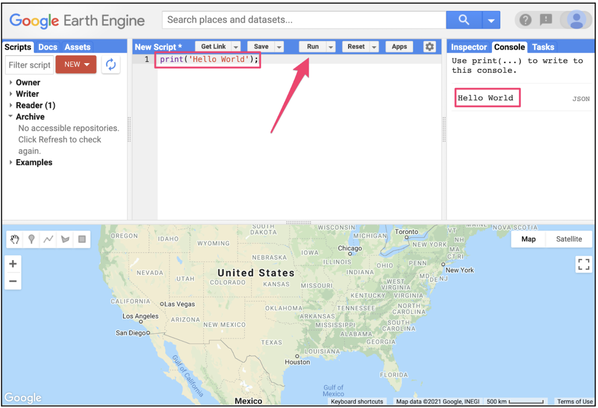

Google Earth Engine exposes its power through an API: you describe the data you want and the computations to run, and Google∆s servers do the heavy lifting next to the data. The API lets you analyze massive geospatial datasets without downloading them or managing clusters.
Learning objectives
- Describe what the Earth Engine API does and why it is cloud-first.
- Explain the client (JavaScript/Python) to server workflow and lazy execution model.
- Run a short script that loads data, computes a metric, and renders the result.
- Identify where to go for documentation, debugging help, and next steps.
Why it matters
Think about the scale of the problem: environmental monitoring, disaster response, agriculture, and climate research all need fast answers from petabytes of imagery. The API hides the infrastructure so we can focus on what actually matters: asking good questions and interpreting the results.

Mental model: how Earth Engine runs our code
Understanding this model will save us hours of confusion later. Here is how it works:
- Client vs server: You write scripts locally; computation runs in Google∆s data centers next to the imagery.
- Lazy evaluation: API calls build a recipe. Work happens only when you request output (e.g.,
Map.addLayer,print, or an export). - Immutable objects: Operations on
ee.Image,ee.Feature, andee.ImageCollectionreturn new objects; originals stay unchanged. - Reproducibility: Scripts reference catalog IDs and geometries, not local files. Anyone can re-run your code and get the same result.
Pro tips
- Use the Inspector tab to spot-check pixels after each major step.
- Keep test regions small to avoid long server queues.
print()is the safest way to inspect server objects; use.evaluate()only when you truly need client-side values.
Two language clients, one API
The underlying API is the same regardless of language. We will use JavaScript for the in-browser Code Editor (it is the fastest way to start), but the same concepts apply to Python if we want to work in notebooks later.
JavaScript in the Code Editor
- Best for quick exploration, sharing links, and map-based debugging.
- No installs required; runs entirely in the browser.
- UI widgets and charts are built in.
// Minimal NDVI example (Code Editor)
var roi = ee.Geometry.Point([-122.45, 37.75]).buffer(2000);
var sr = ee.Image('LANDSAT/LC08/C02/T1_L2/LC08_044034_20210623')
.select(['SR_B5', 'SR_B4'], ['NIR', 'RED'])
.multiply(0.0000275).add(-0.2); // apply scale/offset
var ndvi = sr.normalizedDifference(['NIR', 'RED']).rename('NDVI');
Map.centerObject(roi, 10);
Map.addLayer(ndvi, {min: 0, max: 0.8, palette: ['brown', 'yellow', 'green']}, 'NDVI');
print('NDVI min/max', ndvi.reduceRegion({
reducer: ee.Reducer.minMax(),
geometry: roi,
scale: 30,
maxPixels: 1e9
}));Python in notebooks
- Great for pipelines, unit tests, and mixing EE with NumPy/Pandas/GeoPandas.
- Install with
pip install earthengine-api, then authenticate once. - Use
foliumorgeemapfor interactive maps.
import ee
ee.Initialize()
roi = ee.Geometry.Point([-122.45, 37.75]).buffer(2000)
sr = (ee.Image('LANDSAT/LC08/C02/T1_L2/LC08_044034_20210623')
.select(['SR_B5', 'SR_B4'], ['NIR', 'RED'])
.multiply(0.0000275).add(-0.2))
ndvi = sr.normalizedDifference(['NIR', 'RED']).rename('NDVI')
stats = ndvi.reduceRegion(
reducer=ee.Reducer.minMax(),
geometry=roi,
scale=30
).getInfo()
print('NDVI min/max:', stats)
Hands-on: our 10-minute orientation
- Open the Code Editor (sign in if prompted).
- Create a new script, paste the JavaScript example above, and run it.
- Inspect pixels with the crosshair and Inspector tab to see NDVI values.
- Change the
buffersize or palette to see how outputs update. - Click the Docs tab and search for
Image.normalizedDifferenceto read parameters and examples.
What you should see
A green-to-brown NDVI layer centered on the ROI and a console printout with minimum and maximum values.
Try it: small tweaks that build intuition
Swap to another image ID from the same collection (pick a nearby date) and note how NDVI changes.
Replace NDVI with a false-color composite by adding SR_B6 and visualizing with {bands: ['NIR', 'RED', 'SR_B6']}.
Print the image projection (ndvi.projection()) to connect scale units to the map.
Key vocabulary
- API
- A contract that defines the functions and objects you use to ask the server for data and computations.
- Client library
- JavaScript or Python package that implements the API and handles authentication and requests.
- Server-side object
- Placeholder for data living on Earth Engine (e.g.,
ee.Image); it represents work to be done. - Lazy evaluation
- Earth Engine waits to run work until you request output; this keeps scripts fast and composable.
Common mistakes
- Trying to loop over features with client-side
forloops instead of usingmap(). - Forgetting to keep test areas small (large regions can time out when you are prototyping).
- Calling
.getInfo()on huge objects in Python notebooks, which downloads too much data.
Quick self-check
- What triggers Earth Engine to actually execute the graph you built?
- How would you explain the difference between server-side and client-side objects to a classmate?
- Where do you change scale and region when summarizing results?
Where to go next
- Skim the Earth Engine developer guide to see available data types and reducers.
- Follow the API tutorials for more worked examples.
- When stuck, search or post in the Earth Engine Developers forum.
Going Deeper: EEFA Book
This module gives you the foundation. To explore further, see Chapter F1.1 (Introduction to Earth Engine) in the Cloud-Based Remote Sensing with Google Earth Engine (EEFA Book).